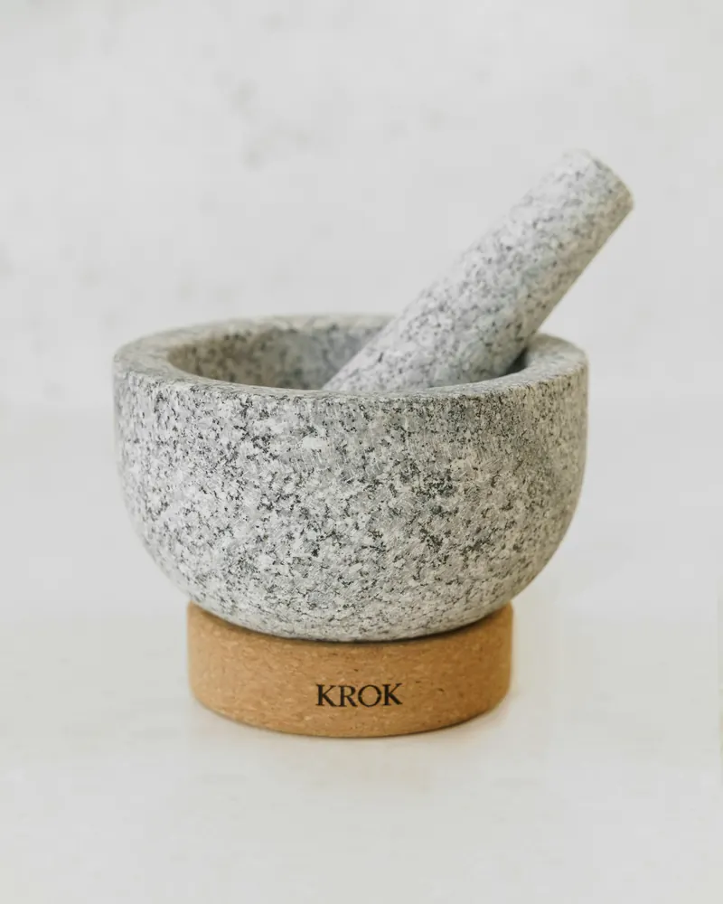
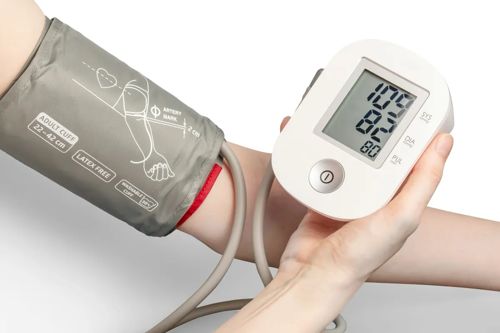
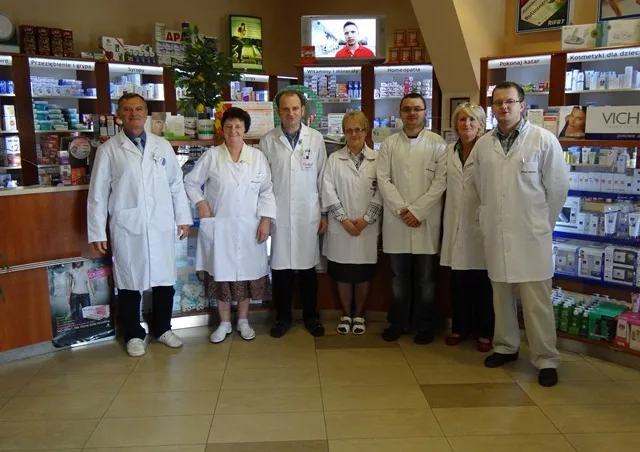

Apteka każdego pacjenta
Rodzinna apteka w samym sercu Limanowej, pod arkadami przy Rynku 2. Od 1995 roku, poza sieciami aptek. Z drugą apteką w Sowlinach, pierwszą prywatną apteką w mieście.
W czym pomożemy
Cała oferta
Leki recepturoweMaści i mieszanki robione u nas, według przepisu lekarza.
Sprzęt medycznyCiśnieniomierze, inhalatory, glukometry i paski. DermokosmetykiVichy, La Roche-Posay, Iwostin, Eris, SVR i inne. Porada farmaceutyJak brać leki, co z czym łączyć, profilaktyka. Bez kolejki do lekarza.
Rodzinnie, od ponad 30 lat
Aptekę prowadzą farmaceuci Halina i Jakub Tokarzowie z córką, mgr farm. Magdaleną Tokarz, i synem Michałem. Nie należymy do żadnej sieci, więc to my decydujemy, jak obsługujemy pacjentów: spokojnie, fachowo i z czasem na rozmowę.
Pytania, które słyszymy najczęściej
Czy zrealizuję u Was e-receptę?
Tak. Wystarczy czterocyfrowy kod z SMS-a lub e-maila i numer PESEL, albo wydruk informacyjny od lekarza. Możesz też wykupić tylko część leków, a resztę później.
Czym jest lek recepturowy?
To lek przygotowany w aptece według przepisu lekarza: maść, krem, zawiesina czy proszki dobrane dla konkretnego pacjenta. Recepturę robimy u siebie, z tradycją sięgającą lat 90.
Co to jest import docelowy?
Sprowadzenie z zagranicy leku, który nie jest dostępny w Polsce, na podstawie zapotrzebowania wystawionego przez lekarza. Pomożemy przejść przez całą procedurę.
Nie ma leku na półce. Co dalej?
Zapytaj przy okienku albo zadzwoń. Brakujący lek zwykle możemy zamówić, a farmaceuta od razu powie, kiedy będzie do odbioru.